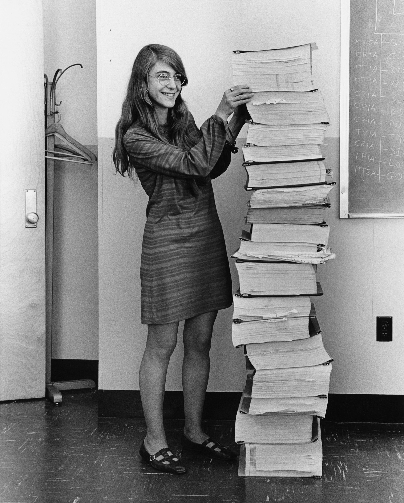

software engineer
SAGE Project
From 1961 to 1963, Hamilton worked on the Semi-Automatic Ground Environment (SAGE) Project at the MIT Lincoln Lab,where she was one of the programmers who wrote software for the prototype AN/FSQ-7 computer (the XD-1), used by the U.S. Air Force to search for possibly unfriendly aircraft.She also wrote software for a satellite tracking project at the Air Force Cambridge Research Laboratories.The SAGE Project was an extension of Project Whirlwind, started by MIT to create a computer system that could predict weather systems and track their movements using simulators.
Draper Laboratory
Hamilton then joined the Charles Stark Draper Laboratory at MIT, which worked on the Apollo Space Mission. Hamilton was initially hired as a programmer for this process but moved on into system designs. Eventually,she was in charge of all Command Module software, which was all the software for navigation and lunar landing guidance.She eventually led a team credited with developing the software for Apollo and Skylab.Hamilton's team was responsible for developing in-flight software, which included algorithms designed by various senior scientists for the Apollo command module, lunar lander and the subsequent Skylab.
Apollo program
In one of the critical moments of the Apollo 11 mission, the Apollo Guidance Computer, together with the on-board flight software, averted an abort of the landing on the Moon. Three minutes before the lunar lander reached the Moon's surface, several computer alarms were triggered.No bugs were never found in the in-flight softwarefor any crewed Apollo mission.The on-board flight software captured these alarms with the "never supposed to happen displays" interrupting the astronauts with priority alarm displays.